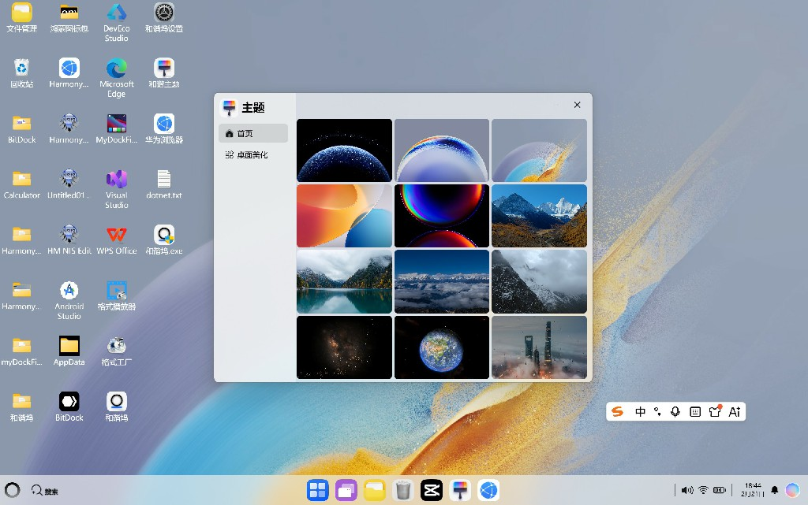
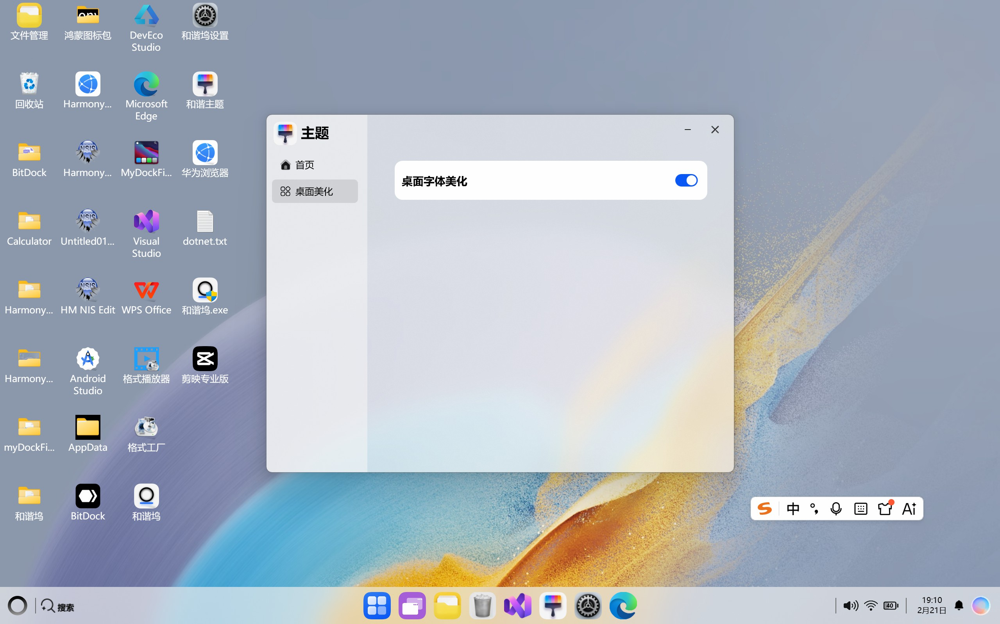
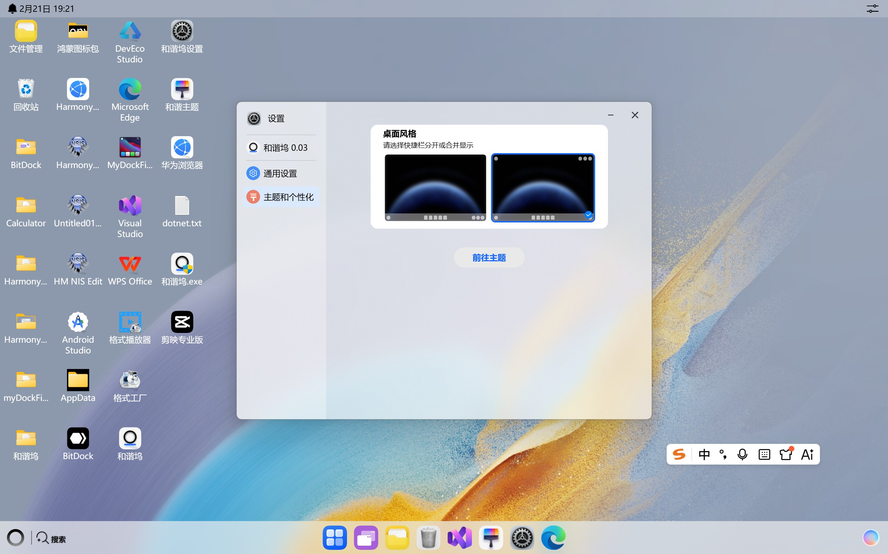

和谐坞 HarmonyDock
专业的Windows桌面美化工具
让您的Windows桌面焕然一新，体验鸿蒙般的优雅与高效
专业的Windows桌面美化工具
让您的Windows桌面焕然一新，体验鸿蒙般的优雅与高效
1.加入鼠标移动光效
2.加入dock栏鼠标移动动画
3.控制中心加入光感玻璃效果
四大核心功能，打造完美桌面体验
内置精选原生高清壁纸，涵盖抽象艺术、自然风光、宇宙星空、城市景观等分类

类似鸿蒙风格的Dock栏，支持拖拽添加应用，动态悬停效果，快速启动常用程序
一键去除Windows桌面图标文字阴影，优化字体渲染，重启后立即生效

支持两种桌面风格，任意切换，满足不同场景和需求

每一个细节都经过精心设计
统一的视觉语言，色彩搭配和谐，圆角矩形设计，现代化界面风格
无恶意代码，不修改系统核心文件，数据本地处理，保护用户隐私
简洁直观的操作界面，所有功能一键操作，无需复杂设置
支持应用/快捷方式拖放进Dock栏，操作简单直观
是的，和谐坞完全免费，您可以无限制地使用所有功能。
和谐坞支持 Windows7/10 1903及以上/11。
可以通过控制面板的程序和功能进行卸载。